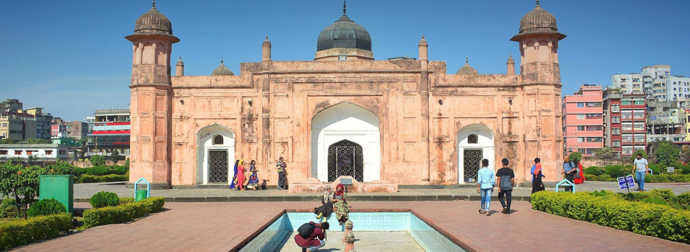
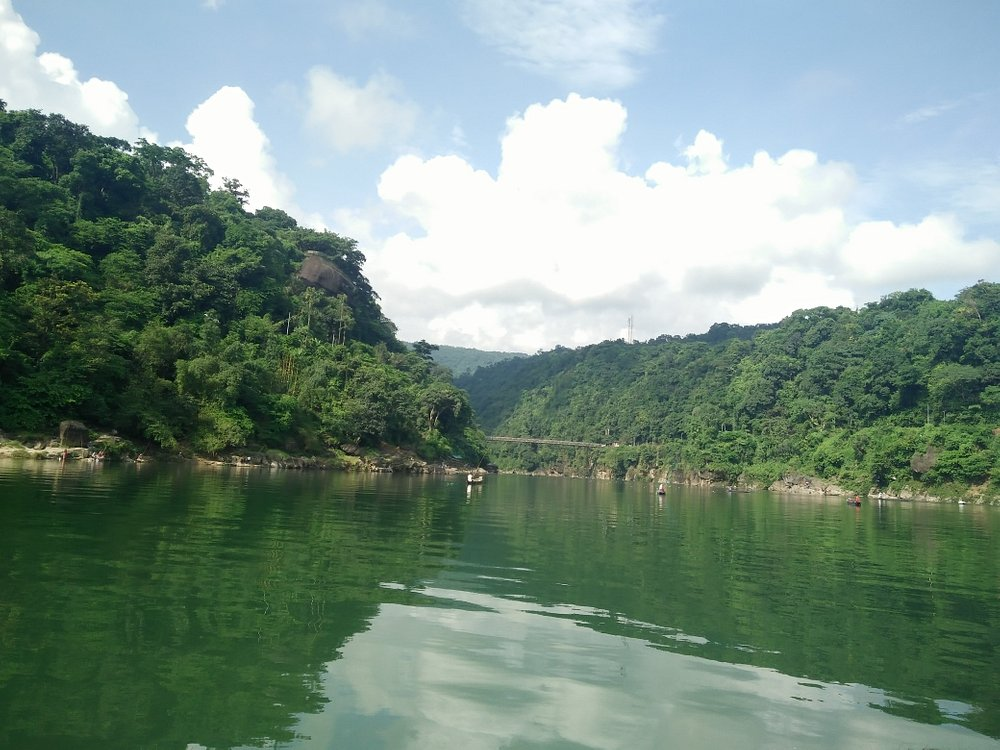
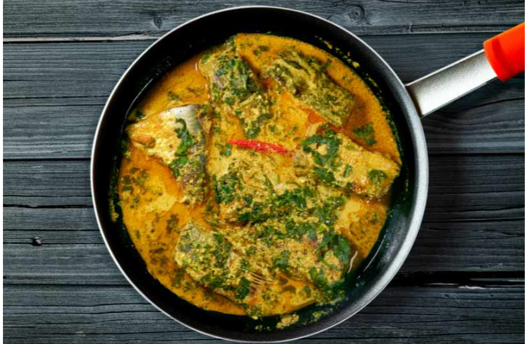

国立殉職者記念碑
国立殉職者記念碑Jatiyo Sriti Shoudho はバングラデシュのサバーにあります。 1971年の独立戦争で命をささげた英雄たちをたたえるために建てられました。 高い塔は自由と勇気の象徴で、たくさんの人が訪れます。

ラルバグ要塞
ラルバグ要塞(Lalbagh Fort)はバングラデシュのダッカにある歴史的な要塞(ようさい)です。 17世紀にムガル帝国によって建設が始まりました。 庭園、美しいモスク、そして博物館があり、多くの観光客を引きつけます。

コックスバザール
コックスバザール（Cox's Bazar）はバングラデシュ南部にある世界最長の自然海岸です。 美しい砂浜が120キロメートル続き、観光地として有名です。 夕日の景色が特に人気で、多くの人が訪れます。

ジャフロン
ジャフロンはバングラデシュの北東にある美しい場所です。 山や緑の景色、茶畑が広がっています。 ダウキ川やジャフロンの滝も見どころで、カシ族の文化も感じられます

マトンビリヤニ
マトンビリヤニはバングラデシュの特別なごちそうです。 柔らかい羊肉とスパイス、ご飯を一緒に炊き込みます。 香りが豊かでお祝いの席で人気があります。

ヒルシャ魚
バングラデシュのイリッシュ魚（ヒルシャ魚）は国の伝統的な食べ物です。特にモンスーンの季節に川でたくさん獲れ、とても美味しいです。 イリッシュは骨が多いですが、脂がのっていて柔らかいのが特徴です。 カレー、蒸し料理、そしてマスタードソースで調理されることが多いです。